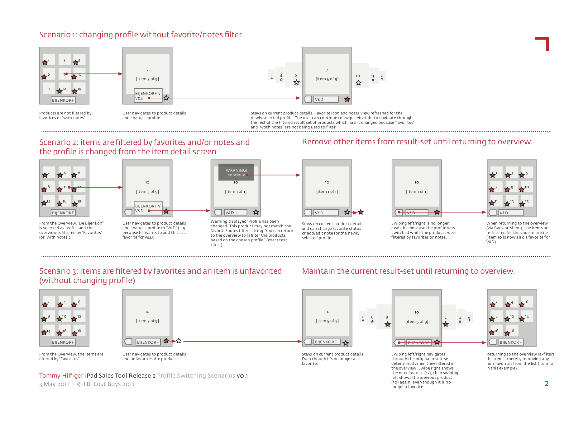

Interaction design
Together with a group of the client‘s target users, I itemized the main requirements and sketched out some the initial solutions before creating more detailed wireframes for discussion with the development team.

